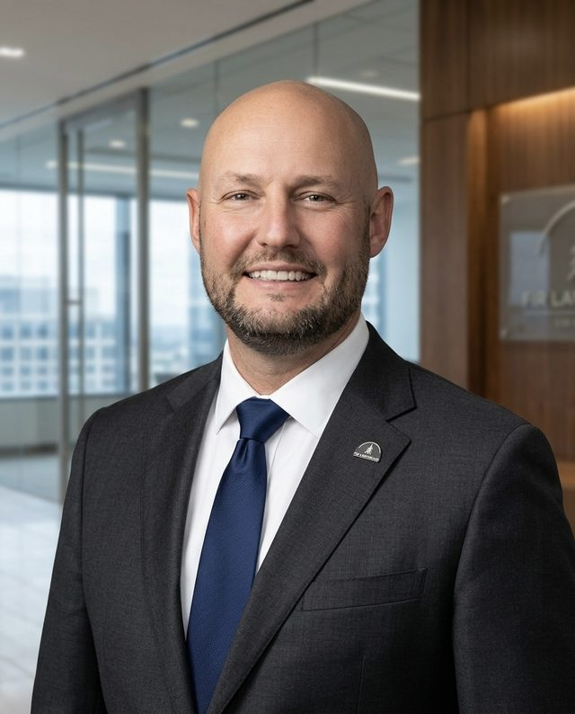

Co-Founder
Ryan Adams
Managing Partner of Fir Law Group
Co-Founder, Fir Forensics
Ryan is an Oregon-licensed civil attorney and the founder and managing attorney of Fir Law Group. His legal, municipal, and military experience brings an important layer of judgment to sensitive workplace and governance matters.
- Former city attorney for Sherwood and Wilsonville, Oregon
- Former Command Judge Advocate, 41st Infantry Brigade Combat Team
- Deputy Regional Defense Counsel for the Western United States
- Experience in civil litigation, municipal law, land use, and business matters
- Established relationships across Oregon’s municipal and professional communities
Ryan helps ensure investigative work is scoped thoughtfully, documented carefully, and communicated in a manner that can withstand legal, executive, and board-level scrutiny.